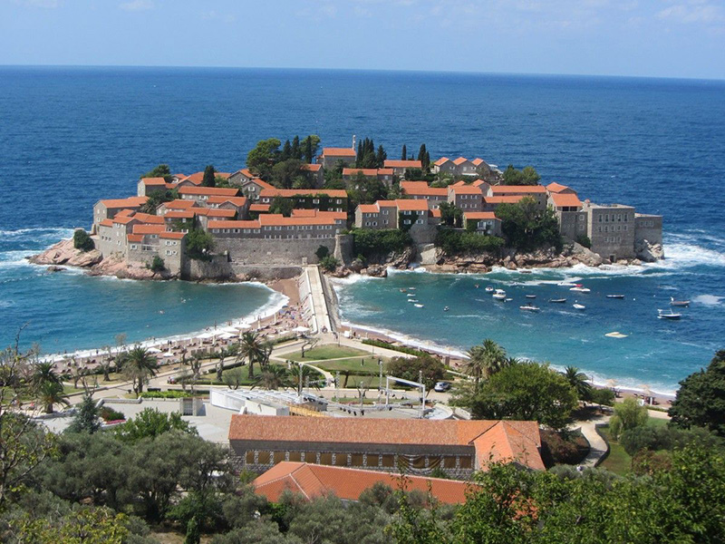
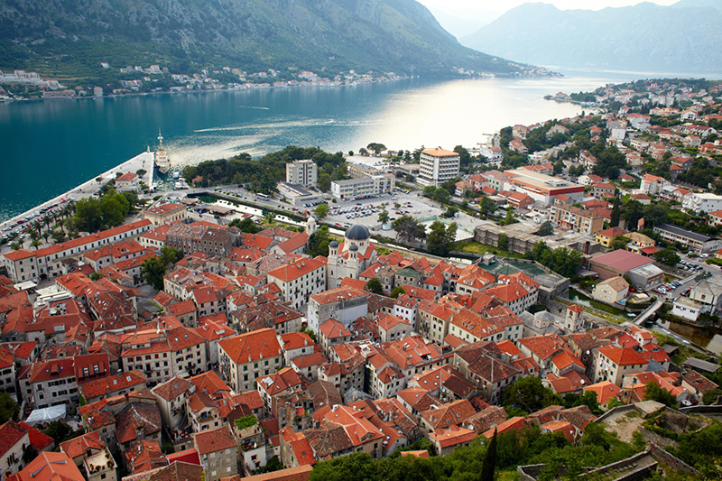

.jpg)

.jpg)


Сегодня мы поговорим про инвестиции в недвижимость Черногории, а также про то, в чем состоят ключевые особенности подобных капиталовложений.
Черногория является достаточно молодым государством, которое получило независимость относительно недавно. Эта страна располагается на берегу средиземного моря и является очень привлекательной для иностранных инвесторов. 
В настоящее время инвестиции в недвижимость Черногории являются очень привлекательными, так как можно приобрести объекты недвижимого имущества по довольно доступной цене. Стоимость жилья в этом государстве постоянно увеличивается, что позволяет надеяться на то, что ваши капиталовложения в долгосрочной перспективе принесут желаемый доход.
>Инвестиции в недвижимость Черногории. Выбор объекта
Если вас интересуют инвестиции в недвижимость Черногории, то следует серьезно подойти к процессу выбора подходящего недвижимого имущества. Следует изучить специфику местного рынка недвижимого имущества и взвесить все преимущества и недостатки выбранного объекта.
 Существует три востребованных варианта инвестиции в недвижимость Черногории:
Существует три востребованных варианта инвестиции в недвижимость Черногории:
1.Большая часть отечественных инвесторов предпочитает приобретать в Черногории годовые объекты недвижимого имущества. Если вы отдаете предпочтение именно этому варианту капиталовложения, то опытные инвесторы рекомендуют приобретать такие объекты недвижимого имущества, которые не требуют проведения существенного ремонта. Подобный подход к капиталовложениям не позволяет вам рассчитывать на получение высокого дохода, но при этом, вам не потребуется тратить дополнительный капитал на проведение ремонта и реконструкцию жилья. Если вы не совершите ошибки при выборе подходящего объекта недвижимого имущества, то при необходимости вы сможете его выгодно перепродать.
2.Инвесторы, которые рассчитывают на получение максимального дохода, предпочитают вкладывать имеющийся капитал в объекты недвижимого имущества, которые в данный момент времени находятся на этапе строительства. Подобный поход позволит вам выгодно перепродать жилье после того, как оно будет сдано в эксплуатацию. Единственным недостатком этого подхода является то, что с момента приобретения жилья до его сдачи в эксплуатацию проходит, как минимум, 1,5 года.
3.Третьим по популярности вариантом инвестиций в недвижимость Черногории является приобретение коммерческих объектов недвижимого имущества. Подобные объекты можно очень выгодно сдавать в аренду при условии, что вы не ошибетесь в процессе выбора недвижимости. 
Преимущества инвестиций в недвижимость Черногории
В текущий момент времени недвижимость в Черногории пользуется огромной популярностью, среди отечественных и зарубежных инвесторов. Среди огромного количества преимуществ подобных капиталовложений, особого внимания заслуживают следующие:
Приемлемые цены на жилые и коммерческие объекты недвижимого имущества.
1.В конце 2009 года правительство Черногории приняло специальный законопроект, согласно которому иностранные инвесторы, которые приобрели объекты недвижимого имущества в этом государстве, обладают такими же правами, как и его граждане.
2. Правительство этого государства проводит лояльную по отношению к иностранным инвесторам налоговую политику. Так например, налог при заключении сделки по купле/продаже объектов недвижимого имущества не превышает 3%. Также иностранные инвесторы при заключении подобных сделок могут рассчитывать на целый ряд льгот.
3.Инвестиции в недвижимость Черногории позволяют рассчитывать на получение довольно высокой прибыли. Согласно имеющейся статистики доходность подобных капиталовложений составляет 50-120%.
Источник: http://cool-profit.ru/investitsii-v-nedvizhimost-chernogorii.html